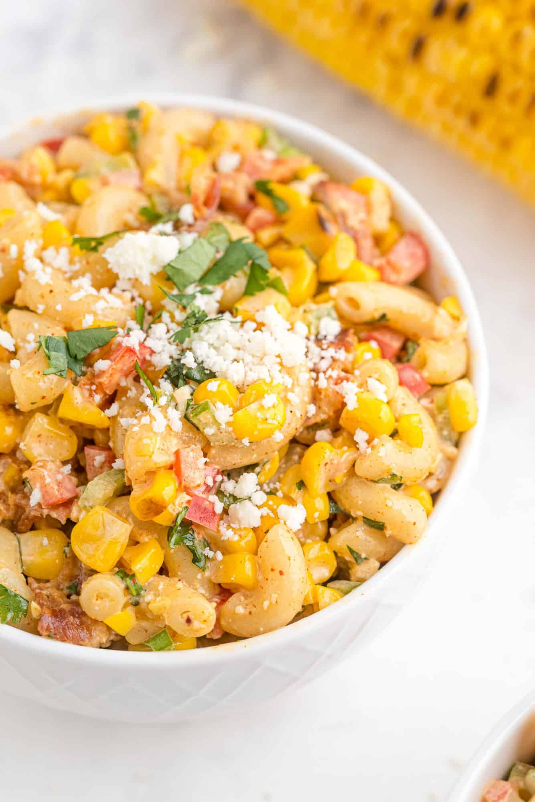

Mexican streeet corn pasta Salad
All the authentic flavors "elote" are combined in this great tasting Mexican street corn pasta salad : grilled corn , nayonaise, chili powder and cotija chese.
Recipe Overciew
why you'll love it:
i mean .. pasta ,bacon , cheese ,creamy dessing . How could you not love it?
How long it takes:
45 minutes
Equipment you'll need:
grill or grill pan ,large pot , large bowl , measuring tools
serving:
10

What you need?
- Pasta:Use a small Pasta such as rorini , fafale or macaroni, Whole Wheat is fine too.
- Corn:For best flavor , buy fresh corn on cub. There's nothing like it ! if freash corn is;t avaloble use good quality caned or frozen corn.
- Red pepper, Jalpenuo pepper and Green onion:this vegetable trio adds lots of crunsh color and flavpr to pasta salad
- Fresh CliantroWhat's Mecican food with out Cliantro?
- Bacon:Iguse you could say the bacon is optional byt why
- Cotja cheese
Leave a Review